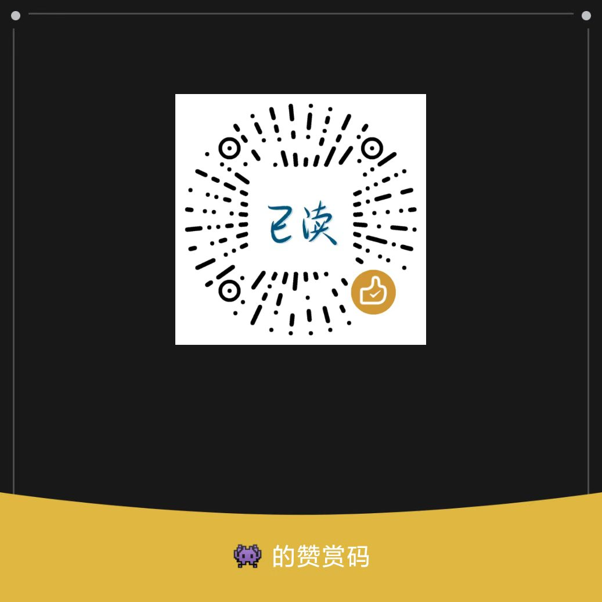

所有知识点放在同一份大纲里。拖动左侧圆点：放到条目之间移动，放到条目中间合并为子级，放到知识点标题上归入该节点。
3D / 2D 画质、颜色与节点样式只保存在本机；颜色会随知识数据一起保存，也会写进导出的 JSON。
2D 星图把节点平铺在平面上，拖动是平移；3D 星海是球体，拖动空白旋转。
倍率越高越清晰、越吃显卡；像素预算限制单帧总像素，低配设备可调小。星点大小、密度、亮度都已放宽到 300%，光晕与星芒也会作用到节点。
间距调大，2D 星点铺得更开；星点大小、密度、亮度上限都提高到了 300%，渲染倍率决定清晰度，越高越吃显卡。
节点会根据掌握比例，从默认色渐变到掌握色。
节点参数作用于所有层级；脉冲参数作用于选中节点时关系线上的流光。
打开时从知识文件读取，修改自动写回；不支持文件读写的环境改为按路径载入。
默认使用内置演示库
自动存档保存在这里；更改后需要重启应用，旧目录内容不会自动迁移。
浏览器支持文件读写时，按钮会打开文件选择器，并把修改自动写回该文件；否则按输入框里的路径载入（相对路径或 http(s) 地址，只读）。
如果这个项目帮到了你，可以请作者喝杯咖啡 ☕

微信扫码赞赏，金额随缘，感谢支持。
只导入标题和内容，不创建关系线；关系可以在星图中手动连接。